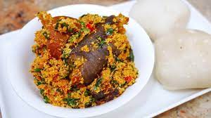

Egusi Recipe

Description
Egusi soup is one of the most popular soups in Nigeria. The dish prepared by most Nigerian tribes in some variation or the other. Follow our simple recipe to learn how to make egusi soup. Whether you’re cooking it for a special occasion or for a week night dinner for your family, this delicious egusi soup recipe will have everyone coming back for more.
Ingredients
- 1 cup blended melon
- 1 tbsp. palm oil
- Uziza
- 1 tbsp. locust beans
- 1 medium sized onion
- 2 cups water
- 2 seasoning cubes
- 2 chopped habanero peppers
- 1 cup stock
- Ugu vegetable
- 1 tsp. salt
- 1 tbsp. crayfish
- Chicken
- Turkey
- 1 tsp. yellow pepper
- 4 medium sized smoked panla fish
Steps
- Add melon, onion, water and fresh pepper in a blender. Blend the ingredients together until it forms a paste.
- Add water, chicken, turkey, ponmo, yellow pepper, stock, smoked panla fish, crayfish, chopped pepper and palm oil to a pot. Allow all the ingredients to boil for 15 minutes.
- Now scoop little bits of the egusi paste into the pot. Do not stir in the mixture, just cover the pot and allow it to cook for 10 minutes.
- Next add the Ugu leaves and Uziza, mix together and allow to cook for 5 minutes. You will notice that the oil will start to rise to the top, your Egusi Soup is now ready.
Serve and enjoy with Eba, Semo, Pounded Yam or even Rice.